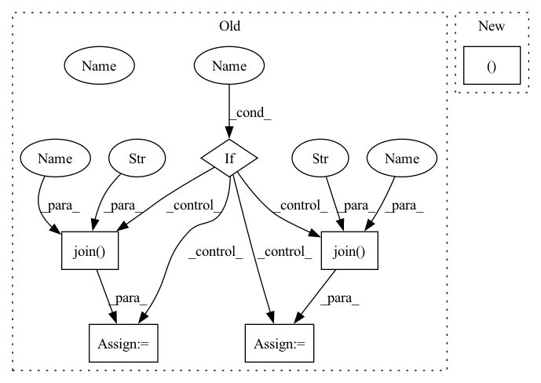

Pattern ID :16664
Before Change
self.transform = self.get_train_transform(shape)
if mode == "train":
if download :
train_path = os.path.join(
root , tag, "chest_xray" , "train")
else:
train_path = os.path.join(
root , "chest-xray", "train" )
super(ChestXrayDataset, self).__init__(
root=train_path, transform=self.transform)
elif mode == "val":After Change
if show:
loader = DataLoader(self, batch_size=show, shuffle=True)
inputs, classes = next(iter(loader))
class_names = self.classes
out = torchvision.utils.make_grid(inputs)
self.imshow(out, title=[class_names[x] for x in classes])In pattern: SUPERPATTERN
Frequency: 3
Non-data size: 6
Instances Fragment ID: 55881040
Project Name: tuttelikz/farabio
Commit Name: f1d17ab62f7226de3ebd472422d38aa48b177fc3
Time: 2021-07-27
Author: s.askaruly@gmail.com
File Name: farabio/data/biodatasets.py
M Class Name: ChestXrayDataset
N Class Name: ChestXrayDataset
M Method Name: __init__(8)
N Method Name: __init__(7)
M Parent Class: ImageFolder
N Parent Class: ImageFolder
M File Name: farabio/data/biodatasets.py
N File Name: farabio/data/biodatasets.py
M Start Line: 101
M End Line: 144
N Start Line: 100
N End Line: 131
Before Change
super(ChestXrayDataset, self).__init__(
root=train_path, transform=self.transform)
elif mode == "val":
if download :
val_path = os.path.join(
root, tag, "chest_xray", "val" )
else:
val_path = os.path.join(
root, "chest-xray", "val" )
super(ChestXrayDataset, self).__init__(
root=val_path, transform=self.transform)
elif mode == "test":After Change
if show:
loader = DataLoader(self, batch_size=show, shuffle=True)
inputs, classes = next(iter(loader))
class_names = self.classes
out = torchvision.utils.make_grid(inputs)
self.imshow(out, title=[class_names[x] for x in classes]) Fragment ID: 55880980
Project Name: tuttelikz/farabio
Commit Name: bd0374049d13c5b0d7cad83da095e2cbc01725d2
Time: 2021-07-29
Author: s.askaruly@gmail.com
File Name: farabio/data/biodatasets.py
M Class Name: ChestXrayDataset
N Class Name: ChestXrayDataset
M Method Name: __init__(8)
N Method Name: __init__(7)
M Parent Class: ImageFolder
N Parent Class: ImageFolder
M File Name: farabio/data/biodatasets.py
N File Name: farabio/data/biodatasets.py
M Start Line: 101
M End Line: 144
N Start Line: 100
N End Line: 131
Before Change
roi=None):
val_slice = 75
if is_train :
// we train on sampleA + sampleB + 0:75 of sampleC
paths = glob(os.path.join( ROOT, "*.hdf" ) )
rois = [np.s_[:, :, :], np.s_[:, :, :], np.s_[:val_slice, :, :]]
else:
// we validate on 75:125 of sampleC
paths = [
os.path.join( ROOT, "sample_C_20160501.hdf" )
]
rois = [np.s_[val_slice:, :, :]]
raw_key = "volumes/raw"After Change
batch_size=1, n_samples=None,
roi=None):
paths, rois = samples_to_paths(samples, is_train)
raw_key = "volumes/raw"
label_key = "volumes/labels/neuron_ids" Fragment ID: 55881031
Project Name: constantinpape/torch-em
Commit Name: 351880c396a76a3078d26c547f818bdb9e25e39e
Time: 2021-04-02
Author: constantin.pape@embl.de
File Name: experiments/cremi/train_affinities.py
M Class Name: AnonimousClass
N Class Name: AnonimousClass
M Method Name: get_loader(6)
N Method Name: get_loader(5)
M Parent Class:
N Parent Class:
M File Name: experiments/cremi/train_affinities.py
N File Name: experiments/cremi/train_affinities.py
M Start Line: 31
M End Line: 43
N Start Line: 46
N End Line: 50
Before Change
self.transform = self.get_train_transform(shape)
if mode == "train":
if download :
train_path = os.path.join(
root, tag, "chest_xray" , "train")
else:
train_path = os.path.join(
root, "chest-xray", "train" )
super(ChestXrayDataset, self).__init__(
root=train_path, transform=self.transform)
elif mode == "val":After Change
if show:
loader = DataLoader(self, batch_size=show, shuffle=True)
inputs, classes = next(iter(loader))
class_names = self.classes
out = torchvision.utils.make_grid(inputs)
self.imshow(out, title=[class_names[x] for x in classes]) Fragment ID: 55881041
Project Name: tuttelikz/farabio
Commit Name: f1d17ab62f7226de3ebd472422d38aa48b177fc3
Time: 2021-07-27
Author: s.askaruly@gmail.com
File Name: farabio/data/biodatasets.py
M Class Name: ChestXrayDataset
N Class Name: ChestXrayDataset
M Method Name: __init__(8)
N Method Name: __init__(7)
M Parent Class: ImageFolder
N Parent Class: ImageFolder
M File Name: farabio/data/biodatasets.py
N File Name: farabio/data/biodatasets.py
M Start Line: 101
M End Line: 144
N Start Line: 100
N End Line: 131